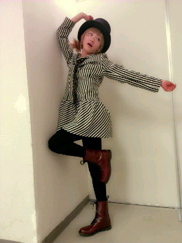

| 2013/01 06 Sun | 握手会ありがとうヽ( ・∀・)ノ |
昨日、今日と握手会がありました！
来てくださったみなさんありがとうございました！
２０１３年最初の握手会はいこまちゃん少し秋田の、田舎者に戻っていたかもしれませんが、いこまちゃんのところに来た皆さん!
いこまちゃんちゃんとアイドルでしたかっ!?
昨日の全握はれなりんと同じレーンでした！
二卵性双生児と名乗っておりました！ヽ(・∀・)ノ
れなりなコンビは似てるけどよく見ると似てないからちゃんと見てね!!
そして今日


今日いこまちゃんの所に来た皆さんはびっくりされたかと思われますが、
いこまちゃん今日は金髪のツインテールの右目の下に星を２つつけて現れました。
外国人の子供になりきりました！ヽ(・∀・)ノ
多分っ
きゃりーぱみゅぱみゅさんになりたい!!
これからの個別はこういうやつをやって行くのでよろしくお願いします！
２０１３年の幕開けは握手会でした！
今年どうぞ皆様よろしくお願いします！
来てくださったみなさん本当にありがとうございました！いこまちゃんをアイドルに戻して下さってありがとうございました！
改めて皆さんの偉大さを感じました

大好きだよん

へばなっ!!
コメント(435)
2013/01/06 23:48